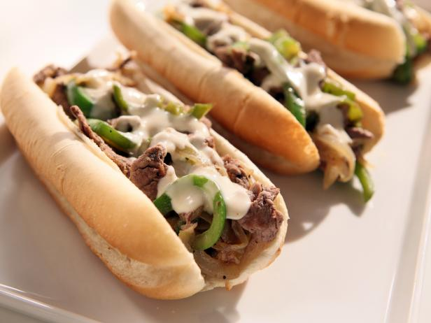

The One and Only: Philly Cheesesteak

I made sure to save the best for last. I have an unhealthy obsession with this sandwich
-- Ingredients --
Make sure not to go shopping for these items while you're hungry. Trust me, you end up with a whole 'nother grocery cart of stuff you dont need
- 1/2 teaspoon salt
- 1/2 teaspoon black pepper
- 1/2 teaspoon paprika
- 1/2 teaspoon chili powder
- 1/2 teaspoon onion powder
- 1/2 teaspoon garlic powder
- 1/2 teaspoon dried thyme
- 1/2 teaspoon dried marjoram
- 1/2 teaspoon dried basil
Okay, pause for one second. That was a LOT of 1/2 teaspoon powders.
Check your basket/bag ... make sure you've grabbed them all ...
Alright, time to get out of the 'Spices & Seasonings' aisle
- 1 pound beef sirloin, cut into thin 2 inch strips
- 3 tablespoons vegetable oil
- 1 onion, sliced
- 1 green bell pepper, julienned (I had to look up what that meant)
- 4 hoagie rolls, split lengthwise
-- Directions --
Now that we've got all of the ingredients, let's put together this abosulute masterpiece of a sandwich
- Mix together alllll of those powders we went through earlier into a small bowl
- Place beef in a large bowl. Sprinkle seasoning mixture over top and stir to coat
- Heat 1/2 of the oil in a skillet over medium-high heat. Add onion and green pepper and saute until tender
- preheat the oven on the broiler setting
- Divide cooked beef between the bottom of (or in between) 4 rolls. Layer with onion and green pepper, then top with sliced sheese. Place on a cookie sheet.
- Broil in the preheated oven until cheese is melted
- Cover with tops of rolls (or don't, if hoagie is more like a hot dog bun style thing), wait for it to cool, and enjoy!
If you enjoyed it, post a picture of it on Instagram with #phillyparadise
Click here to see some more delicious treats